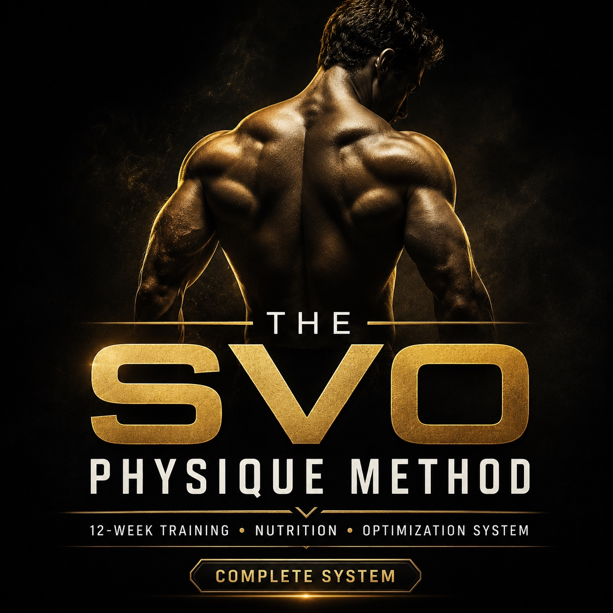

Foundation
Lock in execution, establish performance baselines, and build recoverable training volume before adding complexity.
A complete 12-week physique system built from the training, nutrition, and progress-management principles Ike has used to build and maintain a lean, muscular physique for over a decade.
One-time purchase · Instant digital delivery · Self-guided program

Most plans tell you what to do on Monday. The SVO Physique Method gives you the full operating system: how to train, how hard to push, how to eat for your goal, what to track, and how to respond when results change.
Lock in execution, establish performance baselines, and build recoverable training volume before adding complexity.
Increase effort strategically, introduce controlled intensity techniques, and use SVO Density Sets where they make sense.
Prioritize one or two body parts while maintaining the rest of your physique and managing fatigue.
Two connected tools turn the method into a weekly system you can actually run.
A complete five-day split, four-day alternative, exercise substitutions, effort targets, warmups, progression, and deload guidance.
Starting-calorie formulas, macro targets, meal structure, pre- and post-workout nutrition, grocery guidance, and adjustment rules.
A 12-week workbook for weigh-ins, waist, adherence, recovery, training, photos, and measurements—with automatic recommendations.
Clear standards for sleep, steps, cardio, hydration, fatigue management, travel, supplements, and presentation.
A two-week decision process that checks adherence and recovery before changing food or activity based on one noisy weigh-in.
Workout logs, check-in templates, workout references, substitutions, and practical rules kept together in one system.
A focused finishing protocol designed to add high-quality work without turning the entire workout into junk volume. It uses a stable movement, condensed rest, controlled repetitions, and strict execution.
Used selectively—not on every exercise or when fatigue would compromise safe technique.
Use the same starting framework as the program. The paid Results Dashboard adds weekly tracking and the two-week adjustment engine.
Starting estimates—not a prescription. Follow your two-week trend before making an adjustment.
| Feature | 8-Week Lean Muscle | SVO Physique Method |
|---|---|---|
| Best for | A focused training reset | A complete physique operating system |
| Length | 8 weeks | 12 weeks |
| Training | Four-day plan | Five-day plan + four-day alternative |
| Phases | Single progression | Foundation, Intensification, Specialization |
| Nutrition | Starting targets | Build, Recomp, Reveal + adjustment rules |
| Tracker | Training and progress logs | Full Results Dashboard + decision engine |
| Price | $49 | $129 |
Adults with basic gym familiarity who want a structured, self-guided system for building muscle, improving body composition, and making decisions from tracked progress.
The primary program is gym-based and works best with common machines, cables, barbells, dumbbells, and cardio equipment. Substitutions are provided for many movements.
No. It is a self-guided educational system. The calculator and dashboard create estimates and rule-based suggestions, not individualized medical, dietetic, or rehabilitation care.
Microsoft Excel is recommended for the intended formulas and formatting. Customers should download and save their own working copy.
Use the final check-in to select the next goal, take a lower-fatigue transition week when needed, and repeat with updated baselines or a new specialization focus.
Because digital files are delivered instantly, sales are generally final after access, except where required by law or when a file is defective or inaccessible. See the full policy.
Get the 12-week manual and SVO Results Dashboard together as one complete implementation system.
Secure Payhip checkout · Instant digital delivery